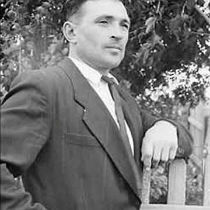

Иммерсивная платформа о военных событиях
Той ночью...
На нашем портале вы найдете оцифрованные записки ветеранов боевых действий (бытовые моменты во время войны, истории с фронта, истории о возвращении), а так же интервью с ветеранами.
Великая Отечественная война
это крупнейшее событие ХХ столетия. Эту войну вёл советский народ против немецко–фашистских войск, ради мира во всём мире. Чтобы больше никогда не повторилась эта страшная война важно помнить о событиях, подвигах и героизме народа, о тех, кто
подарил нам Мир! Будущее!
Пусть не будет войны никогда
Пусть спокойнее спят города.
Пусть сирены пронзительный вой
Не звучит над моей головой.
Ни один пусть не рвётся снаряд,
Ни один не строчит автомат.
Пусть оглашают наши леса
Только птиц и детей голоса.
И пусть мирно проходят года,
Пусть не будет войны никогда!
Была самая короткая ночь в году. Люди мирно спали. И вдруг:
— Война! Война!
22 июня 1941 года на нашу Родину напали немецкие фашисты. Напали словно воры, словно разбойники. Они хотели захватить наши земли, наши города и сёла, а наших людей либо убить, либо сделать своими слугами и рабами. Началась Великая Отечественная
война. Она продолжалась четыре года – это 1418 дней и ночей! Тысячи тысяч часов и 27 миллионов погибших людей! 27 миллионов, вы только представьте – если каждому из 27 миллионов в стране объявить минуту молчания, страна будет молчать…33 года!
Советские солдаты сражались за Родину ради будущих поколений, ради нас. Давайте рассказывать об этой войне нашим детям и внукам, чтобы помнили.
Советские танки Т-34 на фронте.
Фотографии времен ВОВ 1941-1945
Враги напали на нас неожиданно. У них было больше танков и самолётов. Наши армии отступали. Бои шли на земле, в небе, на море.
Прогремели великие битвы: Московская, Сталинградская, битва на Курской дуге. 250 дней не сдавался врагу героический Севастополь. 900 дней в страшной блокаде держался мужественный Ленинград. Отважно сражался Кавказ. На Украине, в Белоруссии,
в других местах громили захватчиков грозные партизаны. И снова битвы, битвы, бои, сражения. Миллионы людей, в том числе и дети, трудились у заводских станков и на полях страны. Советские люди (Советский Союз — так называлась в те годы наша страна)
делали всё, чтобы остановить фашистов. Даже в самые тяжёлые дни они твёрдо верили: «Враг будет разбит! Победа будет за нами!».
И вот пришёл день, когда советские солдаты погнали фашистов с родной земли.Наступил самый долгожданный, самый великий день, когда наши войска дошли до границ Германии и штурмом взяли столицу фашистов — город Берлин. Был 1945 год. Весна. 9
мая. Этот день стал великим праздником — Днём Победы!
Брестская крепость
Брестская крепость стояла на самой границе. Атаковали её фашисты в первый же день войны. Думали: день — и крепость у них в руках. Целый месяц держались наши солдаты. А когда сил не осталось и фашисты ворвались в крепость, последний её защитник
написал штыком на стене: «Я умираю, но не сдаюсь».
Дивизия генерала Панфилова
Была Великая Московская битва. Фашистские танки рвались вперёд. На одном из участков фронта дорогу врагу преградили 28 героев-солдат из дивизии генерала Панфилова. Десятки танков подбили бойцы. А те всё шли и шли. Изнемогали в бою солдаты. А танки
всё шли и шли. И всё же не отступили в этом страшном бою панфиловцы. Не пропустили к Москве фашистов.
Лётчик Алексей Маресьев
Лётчик Алексей Маресьев был сбит в воздушном бою. Он уцелел, но был тяжело ранен. Его самолёт упал на территории врага в глухом лесу. Стояла зима. 18 дней он шёл, а потом полз к своим. Его подобрали партизаны. Лётчик отморозил ноги. Их пришлось
ампутировать. Как же летать без ног?! Маресьев научился не только ходить и даже танцевать на протезах, но главное — управлять истребителем. В первых же воздушных боях он сбил три фашистских самолёта.
Солдат Николай Масалов
Шли последние дни войны. Тяжёлые бои велись на улицах Берлина. Солдат Николай Масалов на одной из берлинских улиц, рискуя жизнью, под огнём врага вынес с места боя плачущую немецкую девочку. Война кончилась. В самом центре Берлина в парке на высоком
холме возвышается сейчас памятник советскому солдату. Стоит он со спасённой девочкой на руках.

